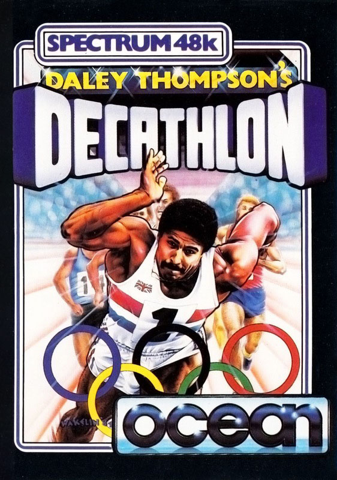
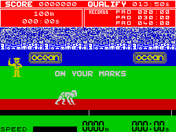
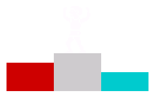

Daley Thompson's Decathlon


{kind=link}

| Publisher: | Ocean |
| Price: | £6.90 |
| Year: | 1984 |
| Source: | CRASH, Issue 10 |
The arcade original 'Track and Field' has spawned a number of Spectrum versions in this Olympics year and has led to a serious discussion on whether Spectrum keyboards or joys ticks are up to it! Perhaps the most eagerly awaited version is this one, and Ocean (obviously good at picking winners) were in no doubt that Daley would get the gold, conveniently releasing the CBM64 version the day after he did, There are, as the word 'decathlon' implies, ten events to compete in. On the first day 100 metres, Long jump, Shot put, High jump and 400 metres. On the second day 110 metres Hurdles, Discus, Pole-vault, Javelin and finally the joystick killing 1500 meters.

In the Spectrum version there is only one competitor on the track events (two in the CBM64 version). The screen has score lines and qualifiers at the top, a band showing the spectators, who cheer and clap, a narrow band representing the edge of the stand with Ocean hoardings plastered all over it, and then the green of the track area with the red running track. Below is a speed bar and result line with time and distance displayed. Track events are played by continuous left/right motions of the joystick, with the addition of fire for jumping or throwing. The simple object is to win the gold medal by qualifying in all events.
The package comes with day one on side one of the tape, and day two on the reverse. Ocean are paying royalties from sales of the game to the British Amateur Athletics Board.
CRITICISM
'Despite the Spectrum version appearing long after the Olympics had finished, Decathlon loses no appeal. The graphics are very good and there are no attribute problems. My only gripe (not a green thing with seeds in the middle) is that Daley is white. I don't know whether Chris Urquhart is colour blind but to say the very least, Daley Thompson has got a sun tan. The sound is excellent and plays a snippet from 'Chariots of Fire when you win gold! This is an extremely good game. The keys respond so well you don't have to bash hell out of them. If you want a decathlon game, then get this one, it will keep you busy for months. In all an excellent buy.'
'I hate to compare versions across computers but the Spectrum version is a direct copy of the CBM version although it's very much more simplified, and the fact that you are only competing against yourself lowers its playability considerably. The graphics are all pretty good, with nice animation from you as Daley, and the parallax movement does help create a sense of depth. There are also the nice touches like the man coming in with tape to measure your performance. I must say, though, that I wasn't all that inspired overall, perhaps its the very type of game that put me off slightly, but there's no doubt that this is the best

Spectrum 'Track and Fields type game around.''This (yet another Olympic spin-off game) is a very good sport program. probably the best of its type yet. (I'm sure I said that about the last one, but superlatives keep appearing!) I really enjoyed Decathlon, it was a very playable game, and there were nice finishing touches to it, for example, the false starts and the athlete scratching his head when he makes a mistake, I cannot really fault the graphics as they are well up to standard.'
COMMENTS
| Control keys: | User-definable, three needed for left/right foot and jump |
| Joystick: | Kempston, Sinclair, Cursor |
| Keyboard play: | Very responsive |
| Use of colour: | Excellent though Daley's stopped being ethnic |
| Graphics: | Very good, smooth, large, and well detailed |
| Sound: | Good tunes, applause etc |
| Skill levels: | (match your own) |
| Lives: | 4 |
| Screens: | 10 events |
| General rating: | Very good, addictivity will depend on individual taste for this type of game. |
| Use of computer: | 85% |
| Graphics: | 82% |
| Playability: | 85% |
| Getting started: | 80% |
| Addictive qualities: | 80% |
| Value for money: | 78% |
| Overall: | 82% |